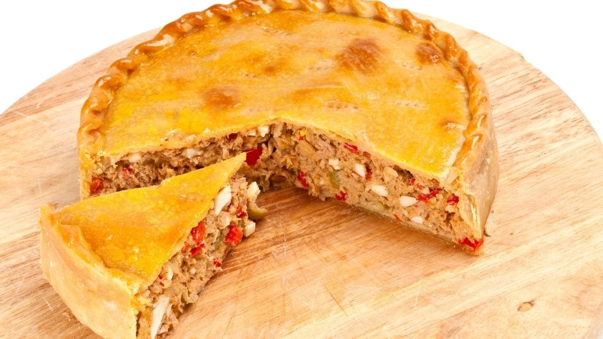

Tarta de Atun

Description
Tarta de cebolla, pimiento, zanahoria y Atun con masa de hojaldre al horno
Ingredients
- Masa de Hojaldre
- 2 cebollas
- 1/2 pimiento
- 1/2 zanahoria
- 1 lata de Atun
- 100 g queso cremoso
Steps
- Saltear las cebollas con el pimiento y la zanahoria
- Agregar el Atun y revolver
- Colocar el la mezcla sobre una de las masas de hojaldre
- Agregar el queso cortado en rodajas sobre la mezcla
- Tapar con la otra masa
- Cocinar durante 25 min